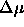
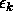
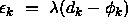

Backpercolation 1 (Perc1) is a learning algorithm for feedforward networks. Here the weights are not changed according to the error of the output layer as in backpropagation, but according to a unit error that is computed separately for each unit. This effectively reduces the amount of training cycles needed.
The algorithm consists of five steps:
 is computed and propagated back through
the hidden layers as in backpropagation.
is computed and propagated back through
the hidden layers as in backpropagation.
 .
.
 is performed once every learning epoch.
is performed once every learning epoch.
The third step is divided into two phases: First each neuron receives a message

, specifying the proposed change in the activation of the neuron (message creation - MCR). Then each neuron combines the incoming messages to an optimal compromise, the internal error of the neuron (message optimization - MOP). The MCR
phase is performed in forward direction (from input to output), the
MOP phase backwards.
of the neuron (message optimization - MOP). The MCR
phase is performed in forward direction (from input to output), the
MOP phase backwards.
The internal error

of the output units is defined as
, where is the global
error magnification parameter.
is the global
error magnification parameter.
Unlike backpropagation Perc1 does not have a learning parameter.
Instead it has an error magnification parameter  . This
parameter may be adapted after each epoch, if the total mean error
of the network falls below the threshold value .
. This
parameter may be adapted after each epoch, if the total mean error
of the network falls below the threshold value .
When using backpercolation with a network in SNNS the initialization function Random_Weights_Perc and the activation function Act_TanH_Xdiv2 should be used.